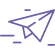
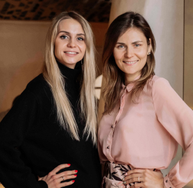
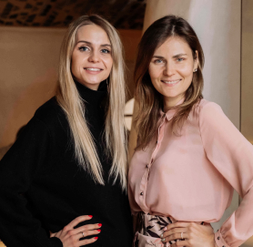

SKILLS AND ABILITIES
Development of concepts for the restaurants and near-restaurants projects, including menu, design, features, and brand philosophy
Search and formation of a dream team through a unique selection system and signature trainings

Selection of media and journalists groups, invitations, holding a press tour, including a culture oriented program, communication and arrangements for publications

Creation of a PR-strategy, development of a plan for PR campaigns, initiation of newsworthy events and activities, creation of press releases, sending newsletters to media channels
Supervising the project through the stages of implementation, recommendations of referrals
ПSelection of a chef and holding tours, including support, menu creation, and PR
Building a brand via analysis and development of the concept, adjustments on current brand and positioning away from competitors
Analysis of the market, competitors, drawing up a portrait of the guests
Creation of marketing, pr, digital-strategies for existing and new projects

Individual meetings with restauranteurs and management in the Q&A format with the development of a detailed work plan
Brand cooperation with influencers and bloggers
Organizing and conducting trend setting photo and video shoots, creating and adapting content for social networks

Creating of digital and social networks strategies, community management, targeting -creation of...или creating -лучше
Development interface design of the pages, development of the websites itself, content, technical support
Seo, contextual advertising, work with restaurants and lifestyle websites

branding development, elaboration of layouts, including menu layouts, as well as creation of banners
 
